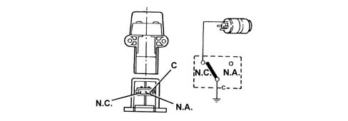

INTRODUCTION - FUEL TANK AND COMPONENTS
- Path
- Descriptions > 10 ENGINE > 1040 FUEL TANK AND PIPES > 1040A FUEL TANK AND COMPONENTS > INTRODUCTION - FUEL TANK AND COMPONENTS
- Kind
- system description
- Applies to
- engines: 1.9 JTD 8v; all production periods
- Interactive page
- https://sloeber94.github.io/elrnDB-fCrm/en/#/194003049
Applies to: engines: 1.9 JTD 8v; all production periods
DESCRIPTION OF COMPONENTS
SUBMERGED PUMP ASSEMBLY COMPLETE WITH LEVEL GAUGE
The fuel pump is part of a single assembly with the level gauge and fuel filter. Components cannot therefore be replaced individually.

Fuel pump
The fuel pump is equipped with a permanent magnet electric motor (1) that controls the pump (2) and a terminal mount cover (3) that contains the electrical and hydraulic connections.
The pump stage is single, peripheral flow type with high performance under low voltage and temperature conditions.
The advantages compared to pumps that operate on volumetric princples are as follows:
- reduced weight;
- limited size.

INERTIA SWITCH
The inertia switch is fitted on the driver's side near the bolt fixing the running board to the front door pillar. If the vehicle is involved in an impact, it interrupts the connection to earth of the fuel pump and, as a result, the supply of fuel to the injection system.

A steel ball (1) fitted in a tapered housing (2) is normally held in place by the attraction force of an adjacent magnet.
Under specific acceleration loads, the ball is released from the magnetic detent and gradually emerges from the tapered mount. Its upward movement is dependent on cone angle.
A rapid release mechanism (3) over the ball forms a normally closed (NC) electrical circuit.
When struck by the ball, the mechanism changes position from a NC circuit to a normally open (NA) circuit and breaks the fuel pump earth circuit.
The switch may be reset by pressing a button protected by a flexible cover (4).